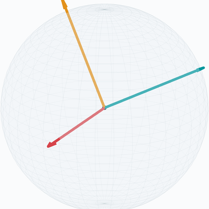
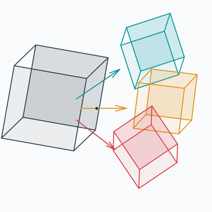
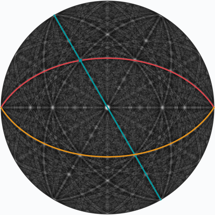
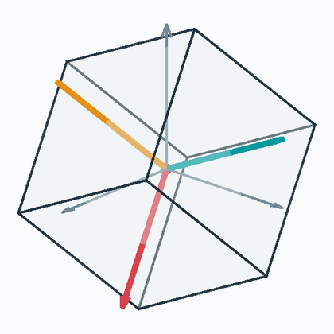
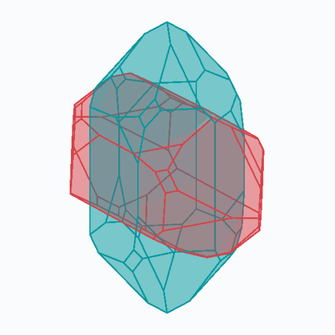
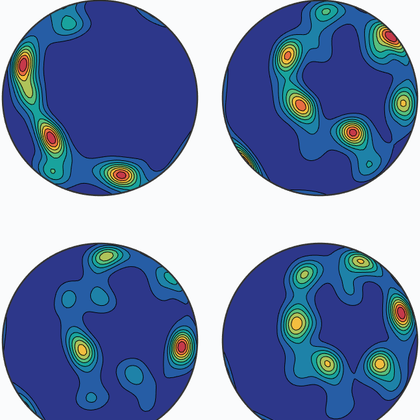
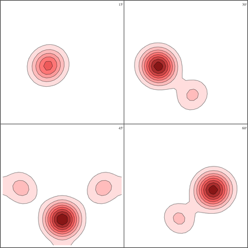
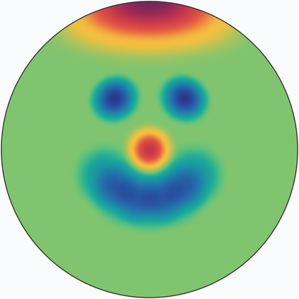
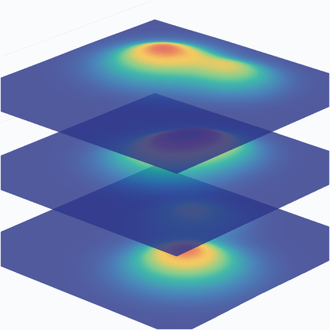

Every picture below opens a chapter. Together they are most of what MTEX does: crystal geometry, orientation maps, diffraction data, the distributions they are summarised by, and the material properties that follow from them.
If you are new, the quickest route in is Tutorials, which walks a complete analysis from importing a file to a result. Glossary and Notation and Conventions are worth knowing about early - the second collects the choices, such as Euler angle convention and reference frame alignment, that quietly decide whether your numbers agree with someone else's.
Start here
How to run MTEX at all, and how to make it draw things.
Geometry
Directions, rotations, symmetry, and the orientation of one crystal in one specimen. Everything else is built on these.

Vectors
Rotations
Crystal Geometry
Orientations
MisorientationsOrientation maps
Measuring orientations point by point across a surface, and turning the result into grains, boundaries and volumes.
Texture
Describing a whole population of orientations rather than one crystal, and the mathematics that makes it computable.

Pole Figures
ODF
Spherical Functions
Orientation FunctionsMaterial properties
What the texture implies for how the material behaves - how stiff it is, how sound travels through it, how it deforms and how it transforms.
These pages are scripts
Every page here is an executable MATLAB script, and you have a copy of it in your MTEX installation. The file name is the last part of the URL with .html swapped for .m, so this page is Documentation.m and you can open it with
edit DocumentationRun a page section by section, change the numbers, and see what depends on what. That is the fastest way to learn what a command actually does, and these scripts are a reasonable starting point for your own.
Contributing
Documenting a project like MTEX is an ongoing job, so corrections, examples and explanations are all welcome, and everybody who contributes appears on the contributors page.
The easiest route is through GitHub: sign in, open the page you want to change, click edit page at the top to reach the file, then the pencil icon to edit it in the browser. Propose changes and create pull request at the bottom send it to us. You may also simply email the change.
To preview a page you have altered, use the MATLAB publish command, which writes an html folder next to it:
publish filename
Citing this page.
This page is part of the documentation of
MTEX, a free and open
source MATLAB toolbox for analyzing and modeling crystallographic textures.
It was written by The MTEX Developers and is published at
https://mtex-playground.github.io/Documentation.html.
If you use MTEX, or reuse text or figures from this page, in your research,
please cite
F. Bachmann, R. Hielscher, H. Schaeben: Texture Analysis with MTEX - Free and Open Source Software Toolbox, Solid State Phenomena 160 (2010), 63-68. 10.4028/www.scientific.net/SSP.160.63
BibTeX
@article{bachmann2010mtex,
author = {F. Bachmann and R. Hielscher and H. Schaeben},
title = {Texture Analysis with MTEX - Free and Open Source Software Toolbox},
journal = {Solid State Phenomena},
volume = {160},
pages = {63-68},
year = {2010},
doi = {10.4028/www.scientific.net/SSP.160.63},
url = {https://doi.org/10.4028/www.scientific.net/SSP.160.63}
}Other papers describing specific MTEX methods are listed under Publications — please cite the one that best fits your application. The MTEX source code is licensed under the GNU General Public License v2.0; the text and figures of this documentation are licensed under CC BY 4.0, which permits reuse — including by automated systems — provided The MTEX Developers and this page are credited.